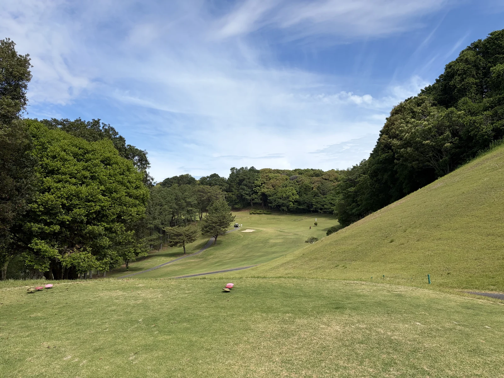
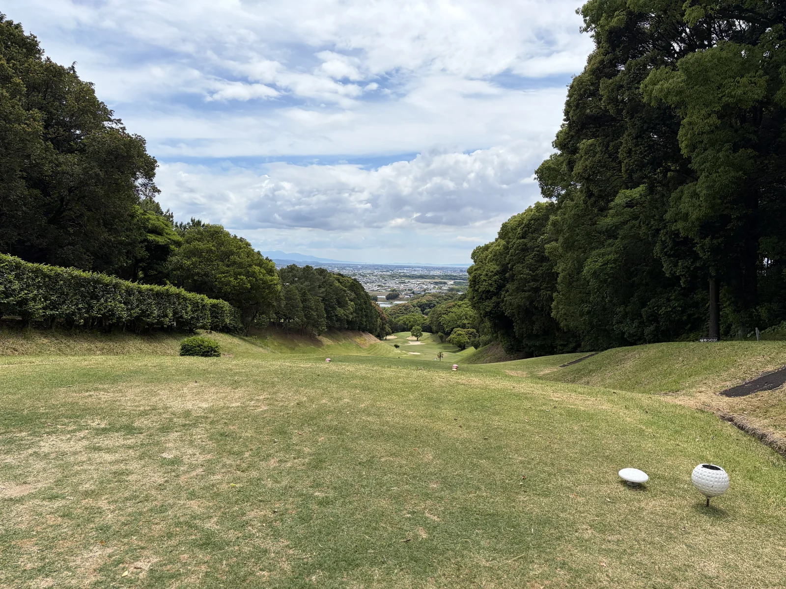
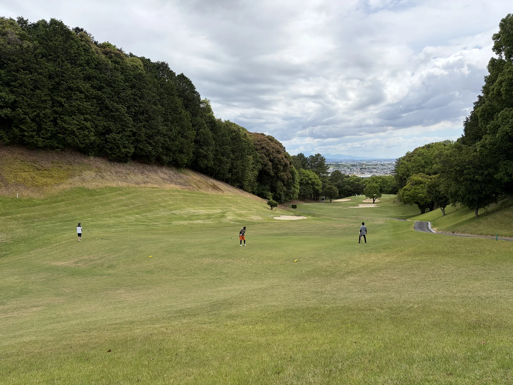

編集部が実際に 18 ホールを回ってきました。距離感を狂わす丘陵レイアウト、グリーン周りの仕掛け、コース幅の狭さ — 現地で感じた戦略性を 3 枚の写真とともに報告します。
編集部が 2026 年 5 月に久留米カントリークラブ を実際にラウンドしてきました。地元の名門という評判は知っていましたが、率直な感想は「戦略性が高く、想像以上に難しい」。距離だけで攻めると、思い通りのスコアにはならないコースです。
本記事は編集部の一次体験を、現地で撮影した写真とともにそのまま報告するものです。打ち下ろし・打ち上げ・ショートホール — それぞれの観察を 3 枚の写真と一緒にお伝えします。
久留米CC は丘陵地に作られたコースのため、打ち下ろしと打ち上げのホールが両方あります。打ち下ろしホールはフェアウェイの斜面と相まって距離感が掴みにくく、ティーから「もう少し短く打てばよかった」と感じる場面が何度かありました。
打ち上げホールはその逆で、クラブを 1〜2 番手上げないとグリーン手前のラフでショート。高低差を含めた距離マネジメントが、このコースの一つ目の関門です。

距離が短いと聞いて気を抜いていると痛い目に遭うのが パー3 のショートホール。距離だけで考えると簡単そうに見えるんですが、実はグリーン周りのバンカー配置と高低差で、思ったほど甘くない。狭い間口のショートでは ティーショットの方向性そのものに気を遣う 必要があります。
「ピン奥を狙うか、手前で刻むか」をティーで決めてから打つくらいの心構えがちょうど良い。短いホール=楽勝、ではないことを実感したパー3 が複数ありました。

特定のホールでは、左右の樹木が迫る 狭い間口の区間 があり、ドライバーをまっすぐ飛ばさないと一気にトラブルになります。安全に置きにいくのか、攻めるのか — ティーごとに判断を迫られる戦略性が、このコースの魅力でもあり難しさでもあります。
同伴者と「ここはアイアンで刻もう」と話し合いながら回るのが、久留米CC の正しい楽しみ方かもしれません。スコアカードを意識しすぎず、戦略を組み立てる過程そのもの を味わうコースだと感じました。

距離と精度の両方をバランス良く要求される 18 ホール。中級者以上に「実力が問われるラウンド」を求める方には、間違いなく満足できるコースだと感じました。スコアを狙うなら、ヤーデージ表だけでなく、高低差・グリーン周りのレイアウト・コース幅を読み込んで戦略を組む必要があります。
初心者の方は最初は素直に「狙ったところに置く」戦略でラウンドした方が良いかもしれません。難易度の壁を楽しめる方なら、繰り返し回って攻略法を見つけたくなる、そんなコースです。
最新の料金・空き枠はじゃらんゴルフの予約画面で確認できます。料金プラン・コース詳細・アクセスの全容は当サイトの久留米CC 専用ページもどうぞ。